Chapter 8 Data Visualization
8.1 bar chart
Let’s use a new dataset as an example here. In the lego_sample dataset, there are various LEGO sets, pieces, recommended retail prices, prices on Amazon, sizes, and more.
## # A tibble: 75 × 14
## item_number set_name theme pieces price
## <dbl> <chr> <chr> <dbl> <dbl>
## 1 10859 My First L… DUPL… 6 4.99
## 2 10860 My First R… DUPL… 6 4.99
## 3 10862 My First C… DUPL… 41 15.0
## 4 10864 Large Play… DUPL… 71 50.0
## 5 10867 Farmers' M… DUPL… 26 20.0
## 6 10870 Farm Anima… DUPL… 16 9.99
## 7 10872 Train Brid… DUPL… 26 25.0
## 8 10875 Cargo Train DUPL… 105 120.
## 9 10876 Spider-Man… DUPL… 38 30.0
## 10 10878 Rapunzel's… DUPL… 37 30.0
## # ℹ 65 more rows
## # ℹ 9 more variables: amazon_price <dbl>,
## # year <dbl>, ages <chr>, pages <dbl>,
## # minifigures <dbl>, packaging <chr>,
## # weight <chr>, unique_pieces <dbl>,
## # size <chr>lego_sample |>
na.omit() |>
ggplot(aes(x = packaging, y = pieces)) +
geom_bar(stat = "summary", position = position_dodge(.8), width = .7, fill = "#BDD5EA") +
geom_errorbar(stat = "summary", position = position_dodge(0.5), width = .12) +
facet_wrap(theme ~ ., scales = "free") 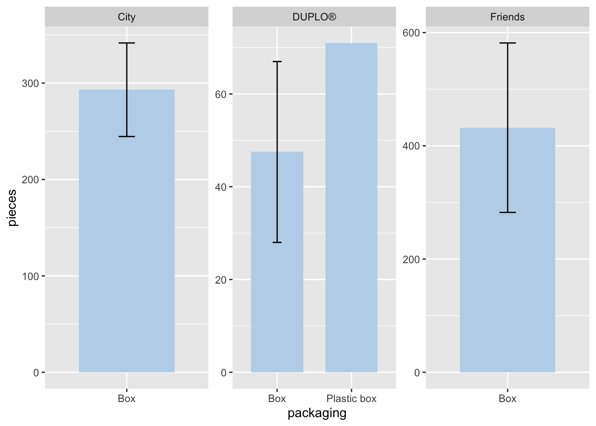
It seems that a lot has happened in the code chunk, and there’s quite a bit of information presented by the graphs.
Let’s walk through the code.
in
ggplot(), we specify thexandyaxes.geom_bar()creates the bar chart.stat = "summary"calculates the mean value of the y-axis variable, which ispiecesin this case.position = position_dodge()separates the bars to avoid overlap.width =sets the width of the bars. Ifwidth = 1, the bars will stick together.fill =can be a single color (as in this example) or another variable to create color variation.
geom_errorbar()calculates and displays the standard error on the graph.- The
width,fill, andpositionarguments work similarly to those ingeom_bar().
- The
facet_wrap()separates the graphs by the variable you specify.You can use
<your variable> ~ .or~ <your variable>.The
scales = "free"option adjusts the y-axis for each graph based on its data. However, it’s not always recommended, as explained below.
Now, let’s analyze the graph. We can observe a few things:
The graphs are separated by different LEGO themes: “DUPLO®”, “Friends”, and “City”.
In the “Friends” and “City” collections, there are only data from the Box packaging method, indicating that there is no data where the LEGO is from “City” or “Friends” collections using Plastic box.
The y-axis scales differ across the graphs. Although the program automatically adjusts the scale based on the data, this might hinder important information. For example, in the “City” and “Friends” collections, the difference in pieces is harder to discern. We will explain how to address this in the scales section.
If we do not want to use facet_wrap() for separating graphs, we can use other ways to distinguish between categories. For exapmle, if we assign a variable to fill =, we can ask RStudio to fill different colors for each category.
lego_sample |>
na.omit() |>
ggplot(aes(x = packaging, y = pieces, fill = theme)) +
geom_bar(stat = "summary", position = position_dodge(.8), width = .7) +
geom_errorbar(stat = "summary", position = position_dodge(.8), width = .12) 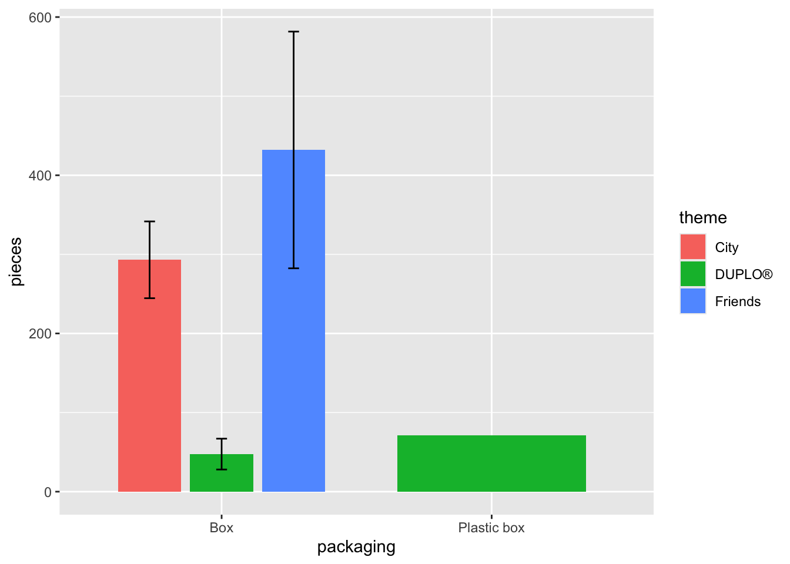
8.2 scatter plot
lego_sample |>
na.omit() |>
ggplot(aes(x = pieces, y = price, color = theme, shape = theme)) +
geom_point() +
geom_smooth(method = "lm")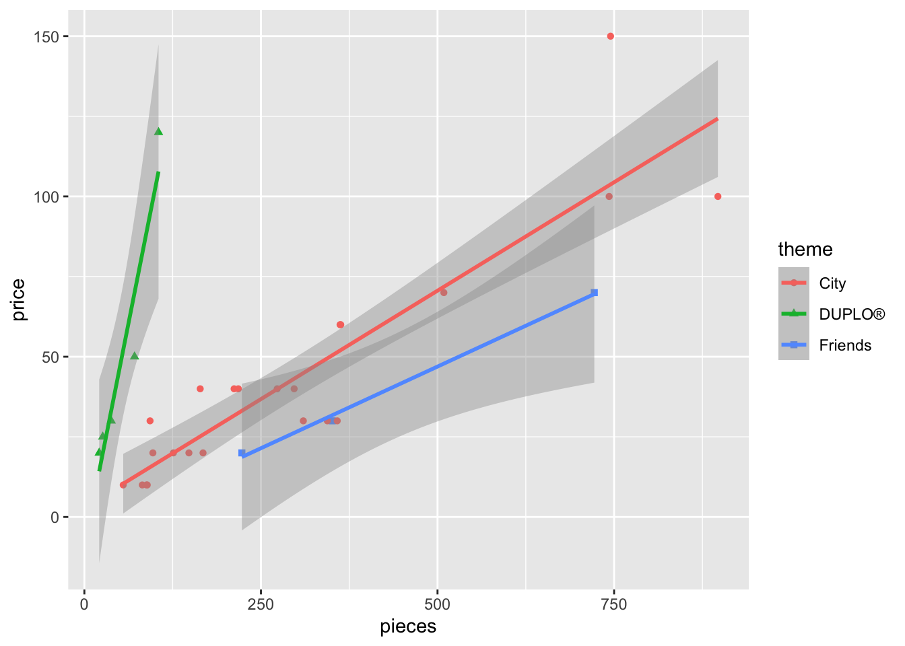
Let’s examine the code:
In the aes() section, I’ve used both color AND shape to differentiate by theme. Usually, one type of distinction is sufficient, but sometimes colors alone may be hard to differentiate. In such cases, adding another feature (e.g., shape) can improve readability.
geom_point()is used to display individual data point, creating the scatter plot.geom_smooth()adds trend lines to the data. By settingmethod = "lm", we apply a linear model, which results in a straight trend line.
Next, let’s try a different dataset: movies. This dataset is part of the openintro package and contains several datasets.
## # A tibble: 140 × 5
## movie genre score rating box_office
## <chr> <chr> <dbl> <chr> <dbl>
## 1 2Fast2Furious acti… 48.9 PG-13 127.
## 2 28DaysLater horr… 78.2 R 45.1
## 3 AGuyThing rom-… 39.5 PG-13 15.5
## 4 AManApart acti… 42.9 R 26.2
## 5 AMightyWind come… 79.9 PG-13 17.8
## 6 AgentCodyBan… acti… 57.9 PG 47.8
## 7 Alex&Emma rom-… 35.1 PG-13 14.2
## 8 AmericanWedd… come… 50.7 R 104.
## 9 AngerManagem… come… 62.6 PG-13 134.
## 10 AnythingElse rom-… 63.3 R 3.21
## # ℹ 130 more rowsThe dataset contains 5 columns and 140 rows, representing movies released in 2003. The columns include the movie title, genre, score (by critics on a scale 0-100), MPAA rating, and box_office (millions of dollars earned at the box office in the US and Canada.)
You can type movies in the help section in the bottom-right panel for a detailed description of the data.
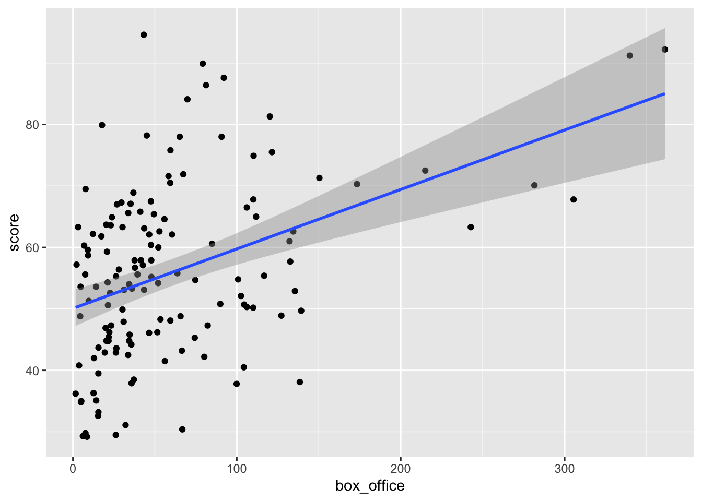
From the graph, we can see a positive relationship between the box_office and score.
8.3 box plot
A box plot helps us visualize the interquartile range in our data. This is useful when comparing a categorical variable with numerical values.
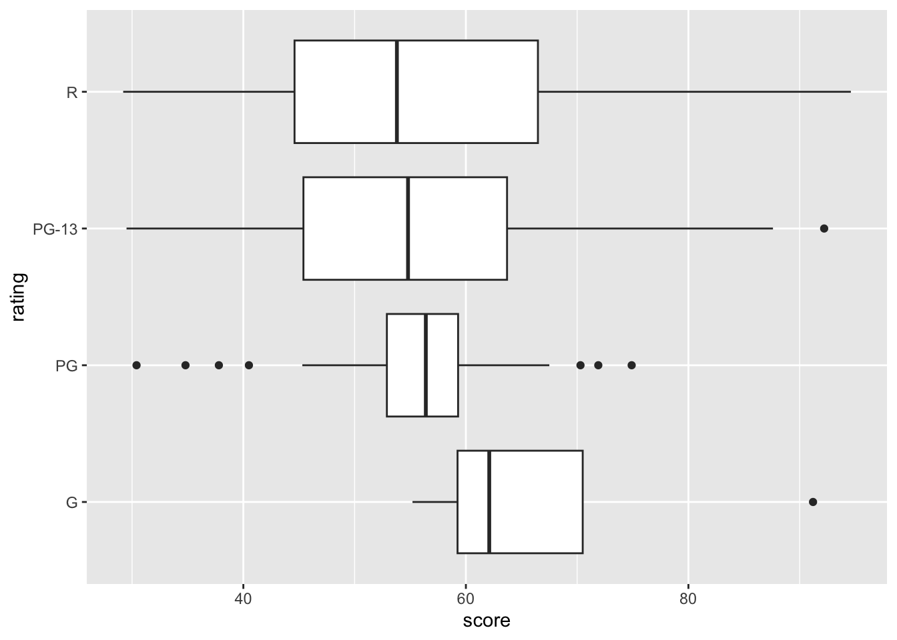
8.4 histogram
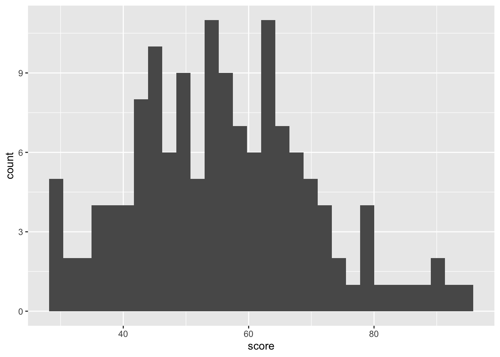
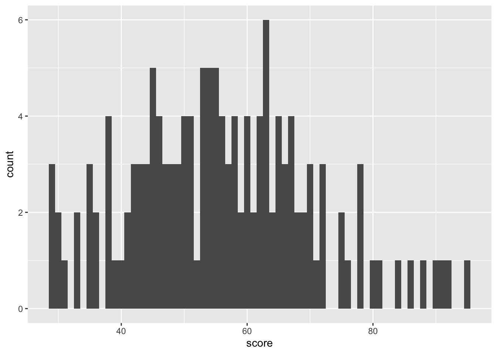
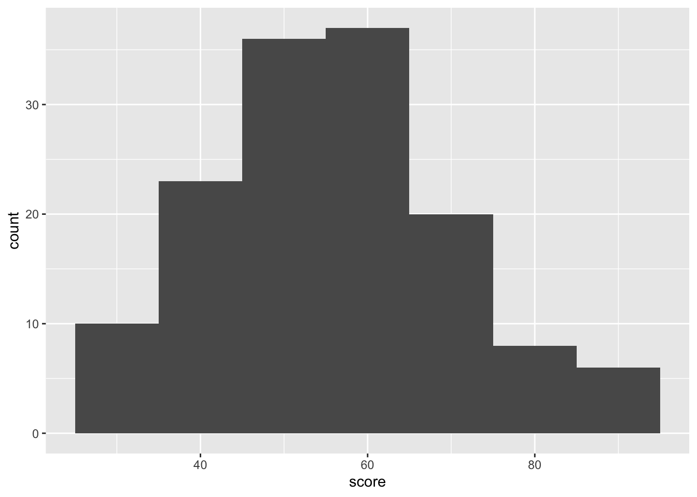
binwidth: controls the thickness of the bars, if the bars are too thin (binwidth = 1), you’ll see individual data points clearly. However, this may not be ideal for observing general trends in the data. Therefore, I recommend experimenting with differentbinwidthvalues to find what works best for your data.
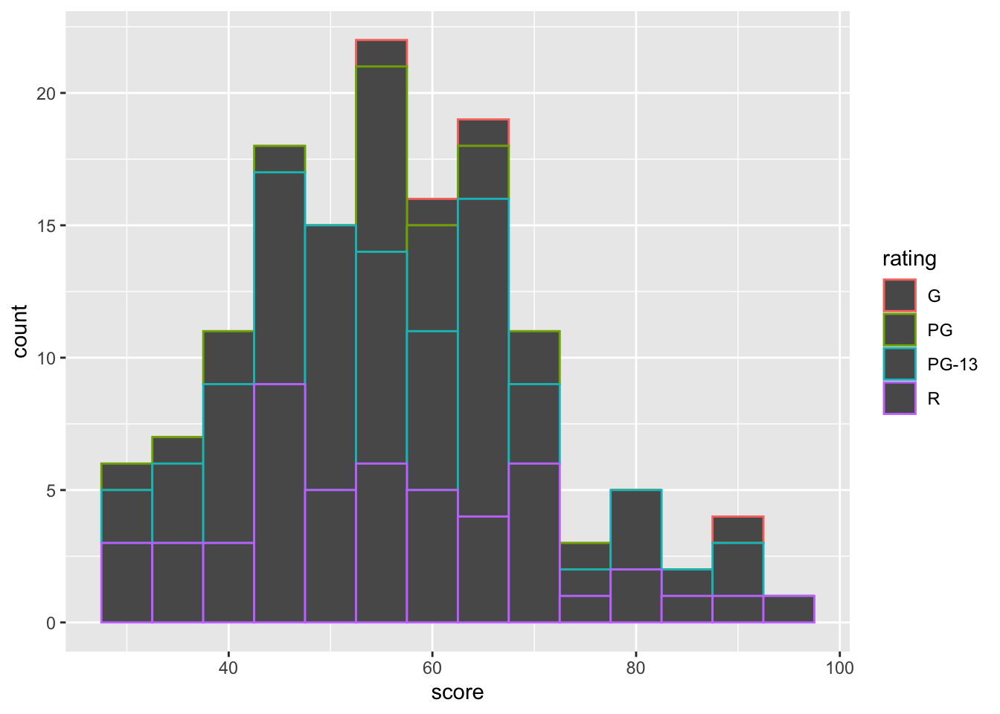
In the histogram, the color argument controls the outline color of the bar, while fill controls the interior color of the bars.
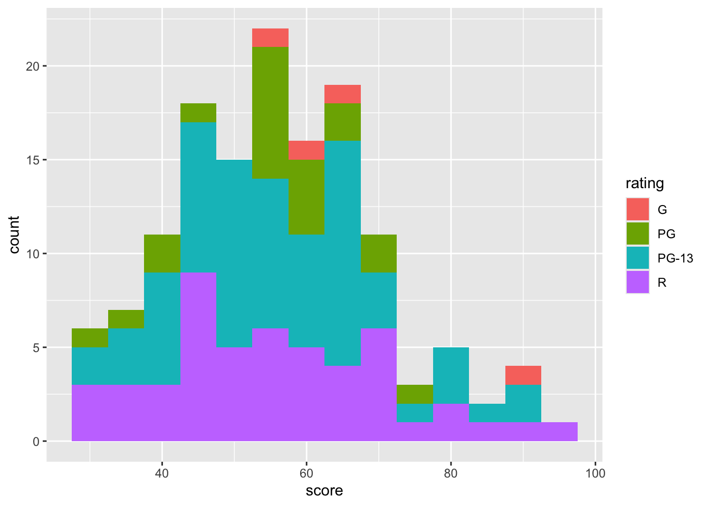
8.5 density plot
Density plots are similar to connecting the peaks of a histogram to form a smooth line, providing a clearer view of the data distribution.
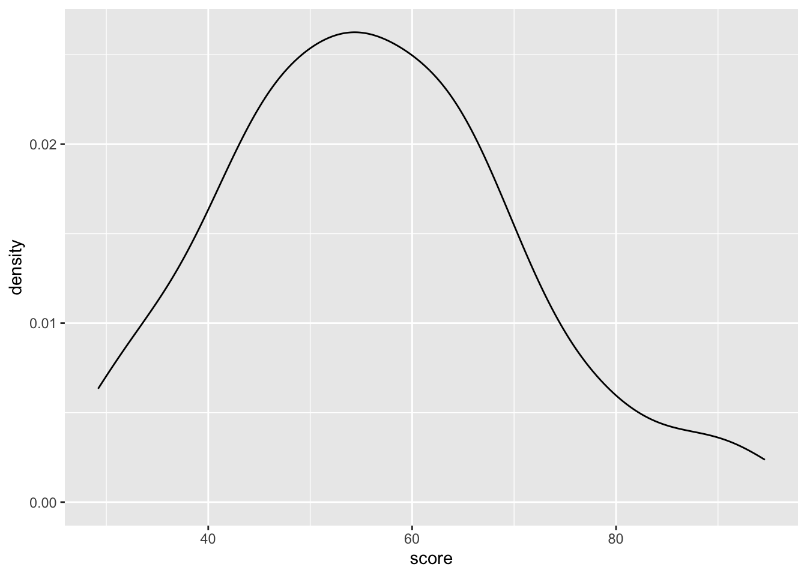
We can also separate data into subcategories.
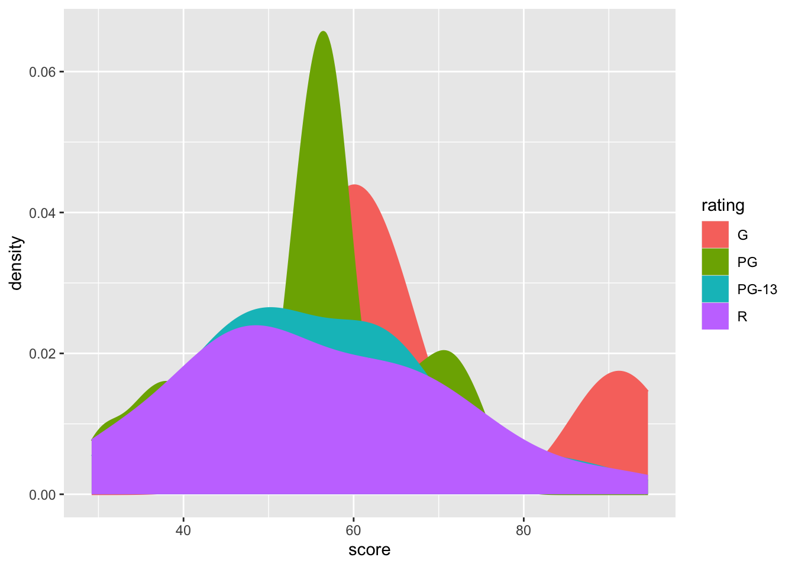
However, this graph might be hard to read due to overlapping data. For instance, the values for ratings R and PG-13 are not clearly distinguishable. To resolve this, we can adjust the transparancy of the graph.
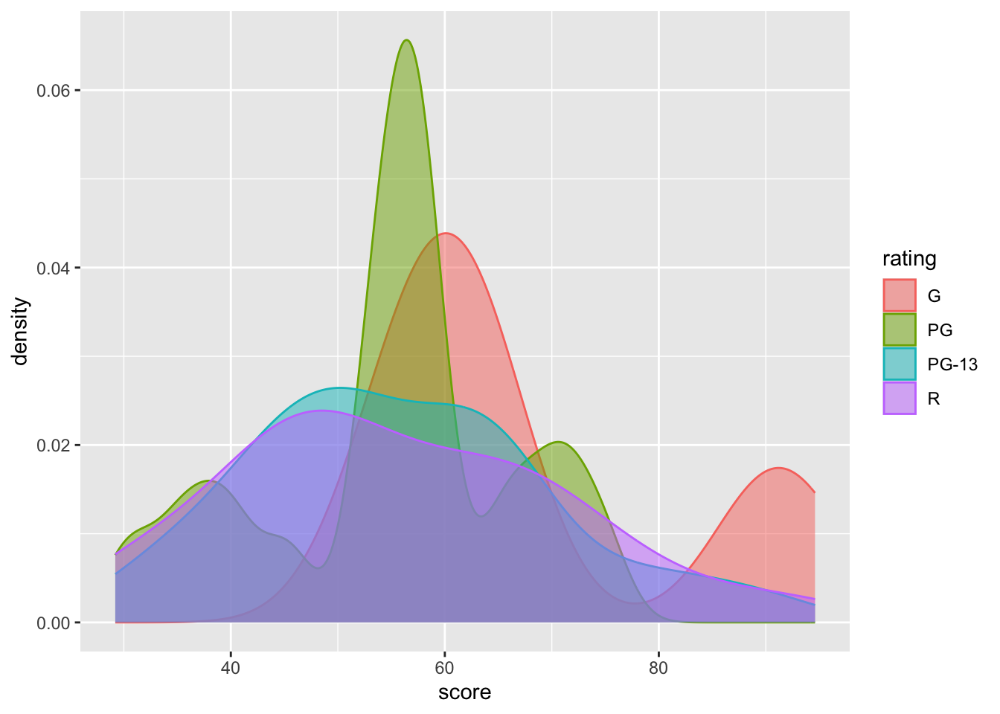
Alternatively, we can use geom_density_ridges() to further separate the data, improving readability.
library(ggridges)
movies |>
ggplot(aes(x = score,y = rating, fill = rating, color = rating)) +
geom_density_ridges(alpha = 0.6)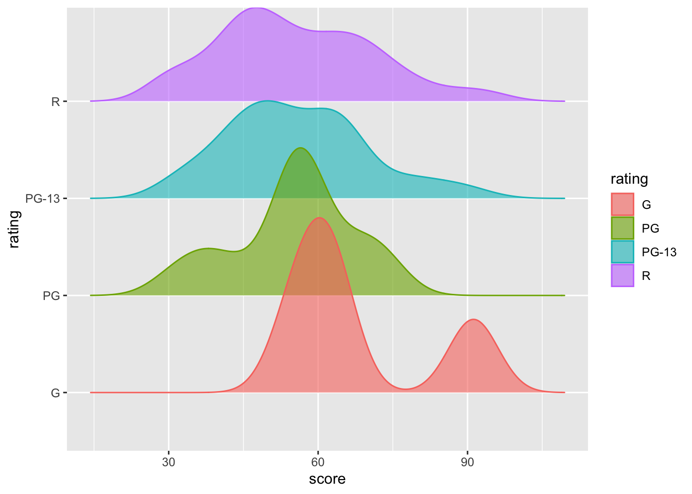
8.6 mixed graphs
We will now create mixed graphs using another package: GGally.
8.6.1 categorical * numeric
這邊的資料在下面才有介紹，不知道是要把介紹提前還是怎樣：Ｄ
## # A tibble: 75 × 14
## item_number set_name theme pieces price
## <dbl> <chr> <chr> <dbl> <dbl>
## 1 10859 My First L… DUPL… 6 4.99
## 2 10860 My First R… DUPL… 6 4.99
## 3 10862 My First C… DUPL… 41 15.0
## 4 10864 Large Play… DUPL… 71 50.0
## 5 10867 Farmers' M… DUPL… 26 20.0
## 6 10870 Farm Anima… DUPL… 16 9.99
## 7 10872 Train Brid… DUPL… 26 25.0
## 8 10875 Cargo Train DUPL… 105 120.
## 9 10876 Spider-Man… DUPL… 38 30.0
## 10 10878 Rapunzel's… DUPL… 37 30.0
## # ℹ 65 more rows
## # ℹ 9 more variables: amazon_price <dbl>,
## # year <dbl>, ages <chr>, pages <dbl>,
## # minifigures <dbl>, packaging <chr>,
## # weight <chr>, unique_pieces <dbl>,
## # size <chr>Let’s say we want to explore the relationship between the price of Lego sets (price, a continuous numeric variable) and their size (size, a categorical variable).
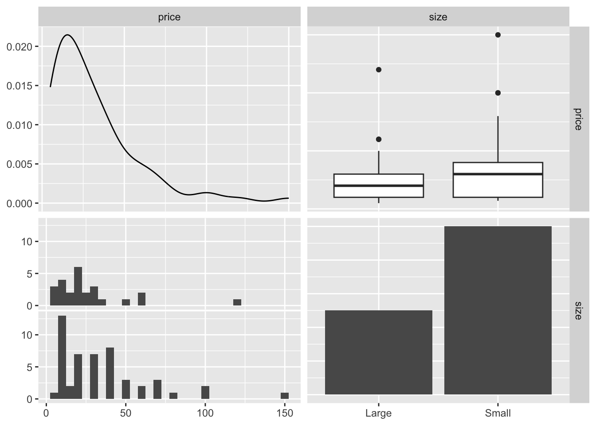
The top-left panel of the resulting plot shows the distribution of the price – a univariate plot of price vs. itself. The bottom-right panel shows the distribution of size, where RStudio counts the number of Lego sets in each category (large and small).
The top-right panel presents a boxplot of price vss size, which is commonly used for visualizing the relationship between numeric variable and categorical variable. Similarly, the bottom-left panel shows the distribution of prices within each size category, but it doesn’t specify which data belongs to large or small categories (possibly because I’m just couldn’t figure it out yet).
8.6.2 numeric * numeric
Next, let’s examine two numerical variables: the recommended retail price (price) and the price on Amazon (amazon_price).
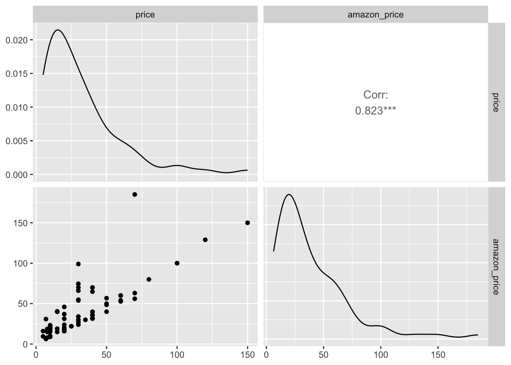
This graph differs from the previous one because both variables are numeric. The top-left panel shows a density plot of the recommended retail price, while the bottom-right panel does the amazon_price. Although the distributions are similar, they are not identical.
In the bottom-right panel, a scatter plot shows a strong positive correlation between the two prices, as reflected by the correlation coefficient displayed in the top-right panel.
8.6.3 numeric * numeric * numeric
What if we add one more numeric variable? We can take a look at the relationship between price, amazon_price, and minifigures (after converting minifigures back to a numeric variable).
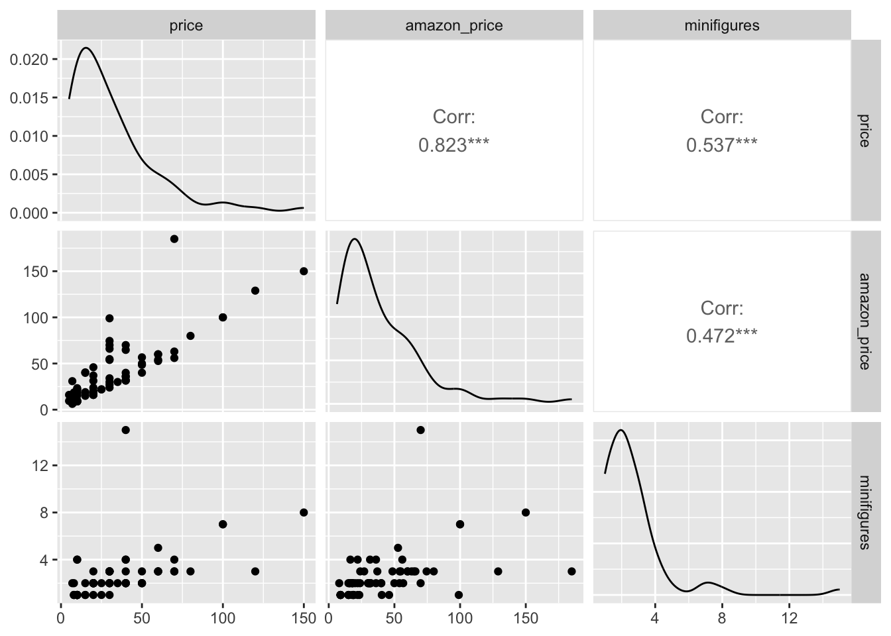
This gives us a clearer overview of the relationship between multiple numeric variables.
If we want to add more information, like trend lines or confidence intervals, we can use the following code:
lego_sample |>
ggpairs(columns = c("price", "amazon_price", "minifigures"),
lower = list(continuous = wrap("smooth")))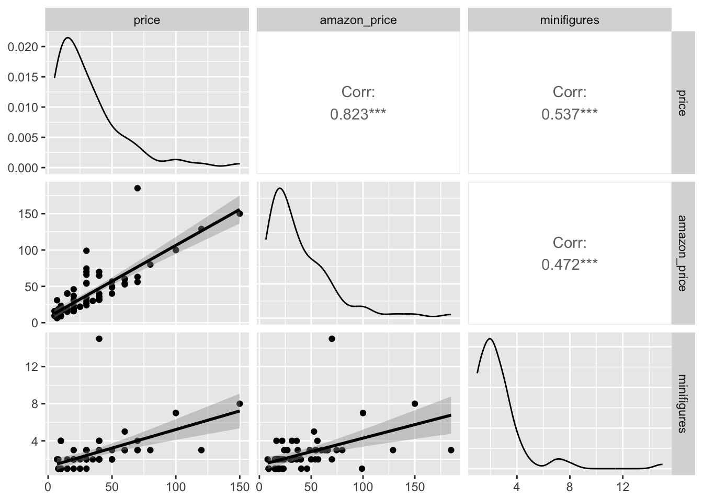
Here, we simply add lower = and specify what we want.
lower =: Controls the display of the lower part of the graph.wrap(): Helps us to specify what we want for continuous numeric variables.smoooth: Creates trend lines on the scatter plot (similar togeom_smooth).continuous =: Specifies that the data is continuous, allowing us to adjust how it’s displayed.
Note that the default correlation method is "pearson". To change this, you can add the mehtod = argument to specify another correlation method.
lego_sample |>
ggpairs(columns = c("price", "amazon_price", "minifigures"),
upper = list(continuous = wrap("cor", method = "spearman")),
lower = list(continuous = wrap("smooth")))For the upper = part of the graph:
upper = "cor": Displays the correlation coefficients in the upper panels.
8.6.4 numeric * numeric * numeric * categorical
Now that we’ve explore several ways to plot numeric variables, let’s add a categorical variable here. A good way to differentiate groups is by assigning colors to categories in the aes() function.
#you have learned a few ways to deal with plots inside ggpairs(). Let us add some colors on it (literally).
Here’s an example:
lego_sample |>
ggpairs(columns = c("price", "amazon_price", "minifigures", "size"),
mapping = aes(color = size, alpha = .7),
upper = list(continuous = wrap("cor", method = "spearman")),
lower = list(continuous = wrap("smooth")))
Adding transparency (alpha =) helps reduce clutter in the plot by making overlapping graphs easier to distinguish.
Below is another coding style to achieve the same result, which I prefer. It separates the column selection step from the plotting step, making the code easier to manage.
lego_sample |>
select(price, amazon_price, minifigures, size) |>
ggpairs(mapping = aes(color = size, alpha = .7),
upper = list(continuous = wrap("cor", method = "spearman")),
lower = list(continuous = wrap("smooth")))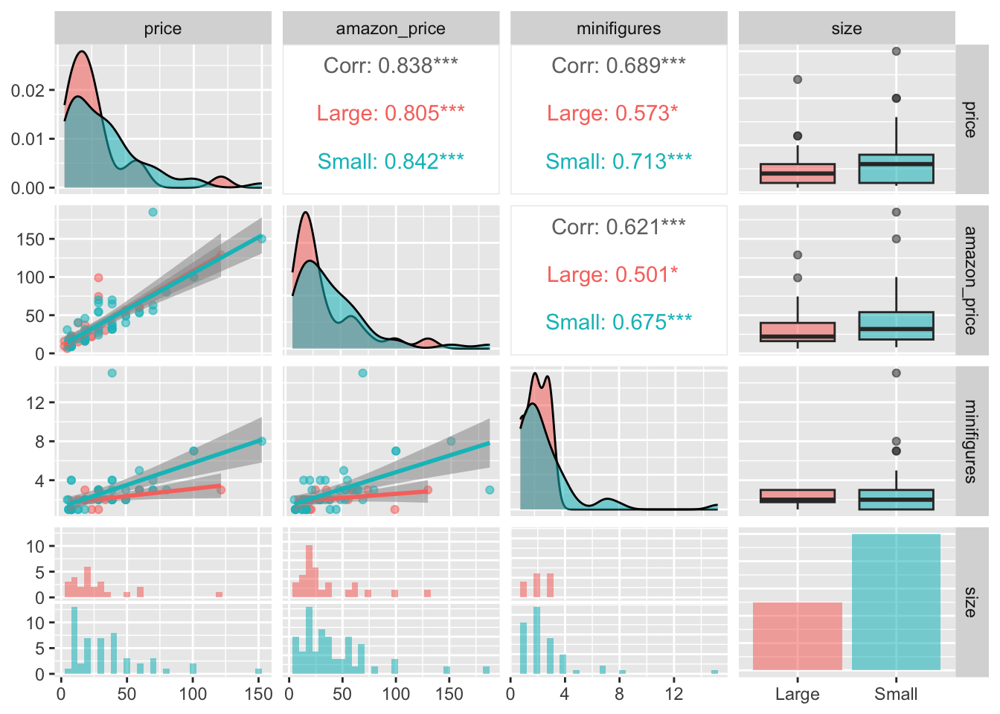
Although ggpairs() is useful for exploring relationships between different variables (e.g., comparing test scores), it can sometimes become overwhelming with too many plots. If you’re unsure whether this approach is the best for your data, I recommend creating individual plots first (e.g., density or box plots) before mixing everything together. This will help clarify the relationships you want to explore and the most effective ways to visualize them.
8.7 additional features on the plot
8.7.1 labels
A good graph includes informative labels. While you could add titles, subtitles, and other labels in separate software after downloading the graph, it’s more efficient and reduces the chance of errors if you add all the labels directly in RStudio.
movies |>
ggplot(aes(x = score,y = rating, fill = rating, color = rating)) +
geom_density_ridges(alpha = 0.6) +
labs(
title = "Movie Scores of Different MPAA Ratings.",
subtitle = "Put your subtitle here because I don't know what to say.",
x = "Movie Score",
y = "MPAA Rating",
fill = "Rating",
color = "Rating",
caption = "sources: movies from openintro")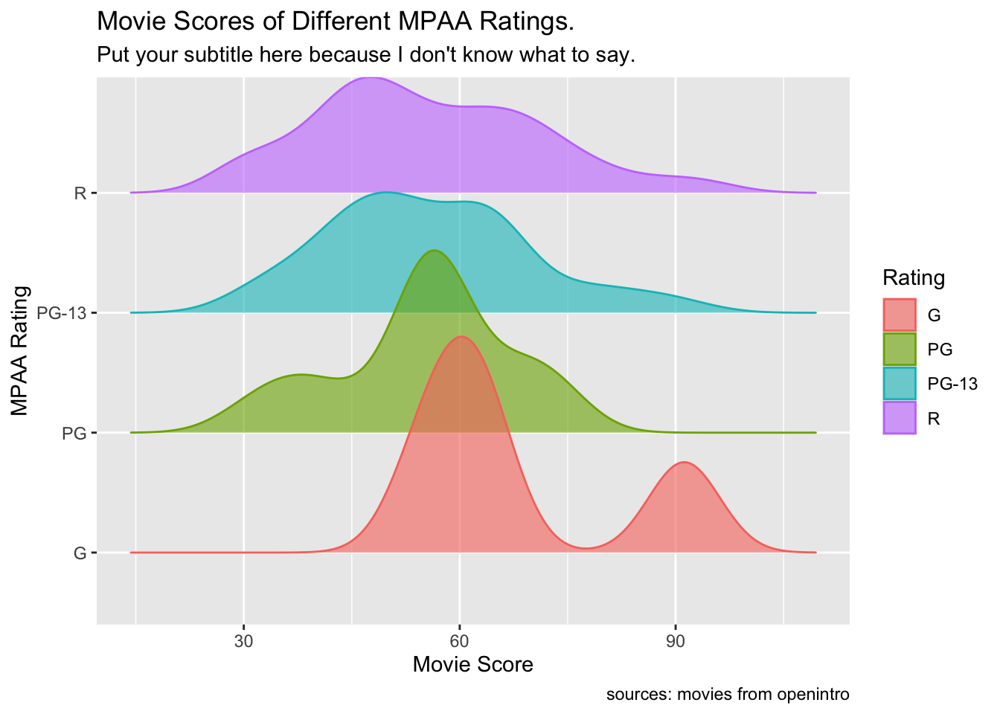
If you prefer not to show certain labels, you can aslo specify this in the code and let the program remove them for you.
movies |>
ggplot(aes(x = score,y = rating, fill = rating, color = rating)) +
geom_density_ridges(alpha = 0.6) +
labs(
x = NULL,
fill = NULL,
color = NULL,
fill = NULL)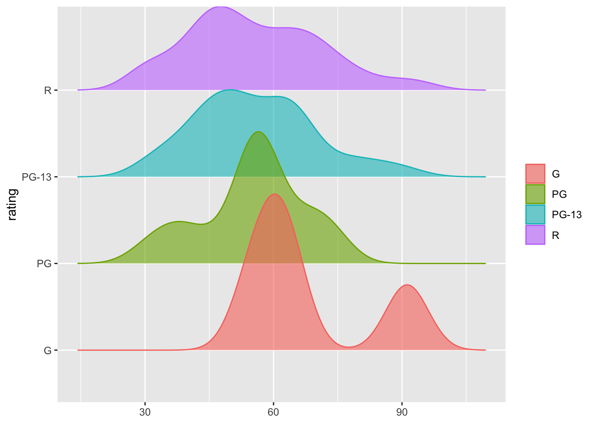
For example, in the code chunk above, when we set the x-axis to NULL, the label disappears from the graph. However, if we don’t specify the y-axis in the labs() function, the original label from the data will still appear.
Also, if you want to remove the legend, you can do so by adjusting the theme() function.
movies |>
ggplot(aes(x = score,y = rating, fill = rating, color = rating)) +
geom_density_ridges(alpha = 0.6) +
labs(x = NULL, y = NULL) +
theme(legend.position = "hide")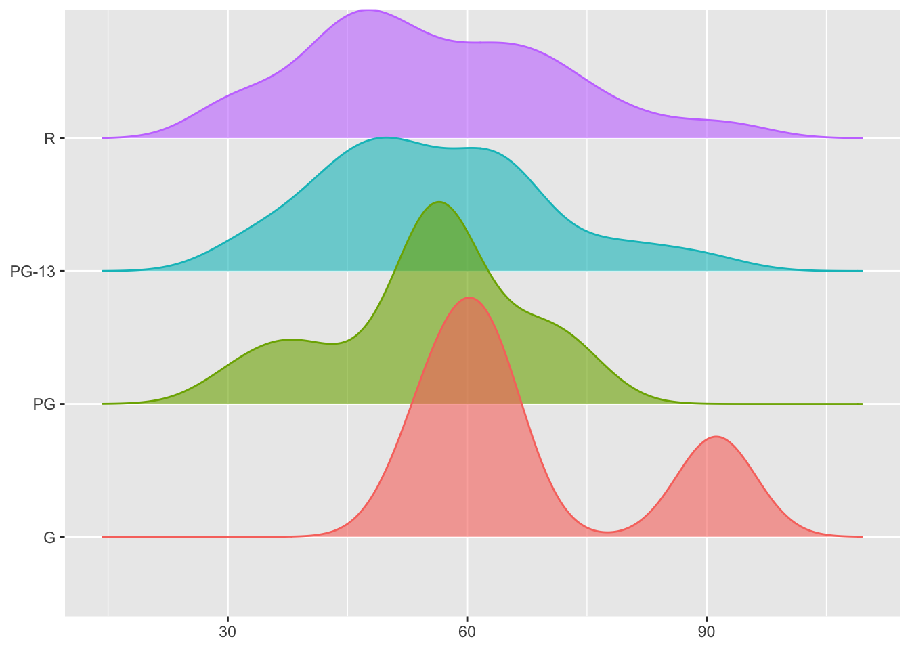
8.8 不知道怎麼改label欸 頭痛 ㄞ 可以mutate但好麻煩呀
8.8.1 colors
Let’s demonstrate how to change colors in a graph with the lego_sample dataset!
lego_sample |>
na.omit() |>
ggplot(aes(x = size, y = price, fill = as.factor(minifigures))) +
geom_bar(stat = "summary", position = "dodge")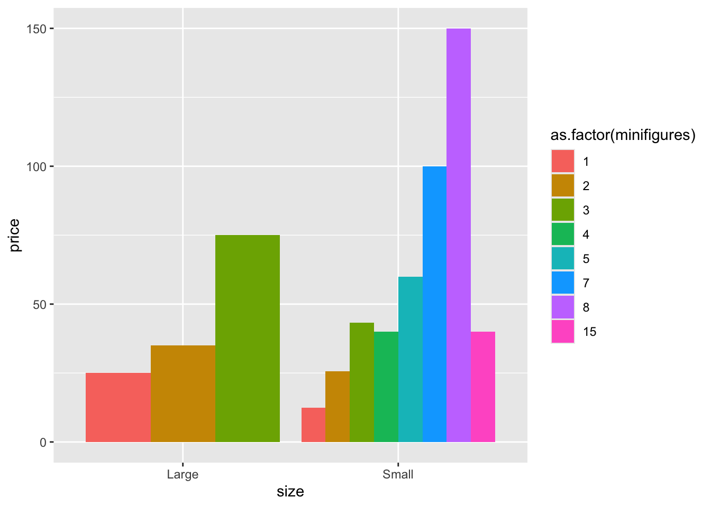
For easier demonstration, we will focus on LEGO sets with 1 to 3 minifigures.
lego_sample |>
na.omit() |>
filter(minifigures <= 3) |>
ggplot(aes(x = size, y = price, fill = as.factor(minifigures))) +
geom_bar(stat = "summary", position = "dodge")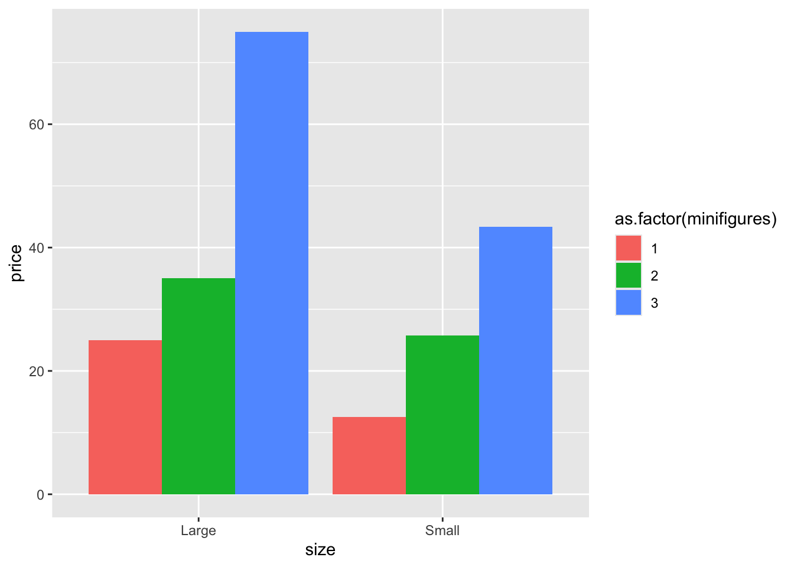
Now we’re all set!
lego_sample |>
na.omit() |>
filter(minifigures <= 3) |>
ggplot(aes(x = size, y = price, fill = as.factor(minifigures))) +
geom_bar(stat = "summary", position = "dodge") +
scale_fill_manual(values = c("darkblue","yellow","pink"))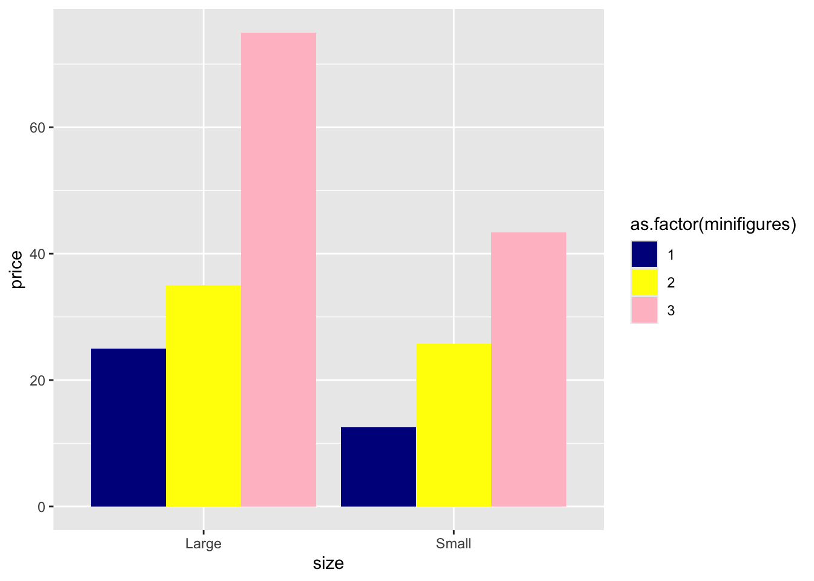
It’s as simple as that! Also, note that you only need to specify each color once. For instance, although the colors "darkblue", "yellow", and "pink" appear twice in the graph, we only need to type them once in stead of using values = c("darkblue", "yellow", "pink", "darkblue", "yellow", "pink").
If you don’t want to use default colors but don’t feel like manually selecting distinct colors each time, you can use pre-existing color palettes in RStudio.
You can also add outlines to the bars in the chart to make them pop up more.
lego_sample |>
na.omit() |>
filter(minifigures <= 3) |>
ggplot(aes(x = size, y = price, fill = as.factor(minifigures))) +
geom_bar(stat = "summary", position = "dodge", color = "black") +
scale_fill_viridis_d() 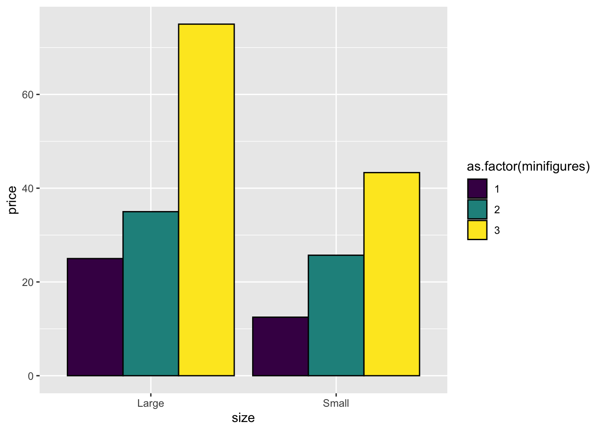
Note that we use scale_fill_viridis_d() here. If you’re using color = instead of fill =, remember to switch to scale_color_viridis_d().
lego_sample |>
na.omit() |>
filter(minifigures <= 3) |>
ggplot(aes(x = size, y = price, color = as.factor(minifigures))) +
geom_bar(stat = "summary", position = "dodge", fill = "white") +
scale_color_viridis_d() 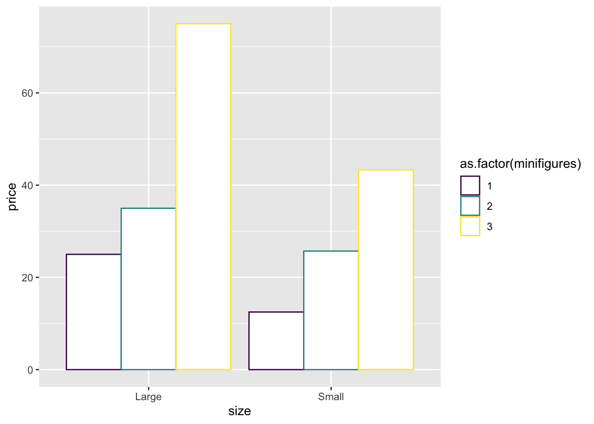
8.8.2 scales
Now, let’s look at some data from heroes2 dataset.
heroes2 |>
filter(Intelligence %in% c("good", "high")) |>
ggplot(aes(x = Gender, y = Strength)) +
geom_bar(stat = "summary", position = position_dodge(.8), width = .7) +
geom_errorbar(stat = "summary", position = position_dodge(0.5), width = .12) +
facet_wrap(Intelligence ~ ., scales = "free") 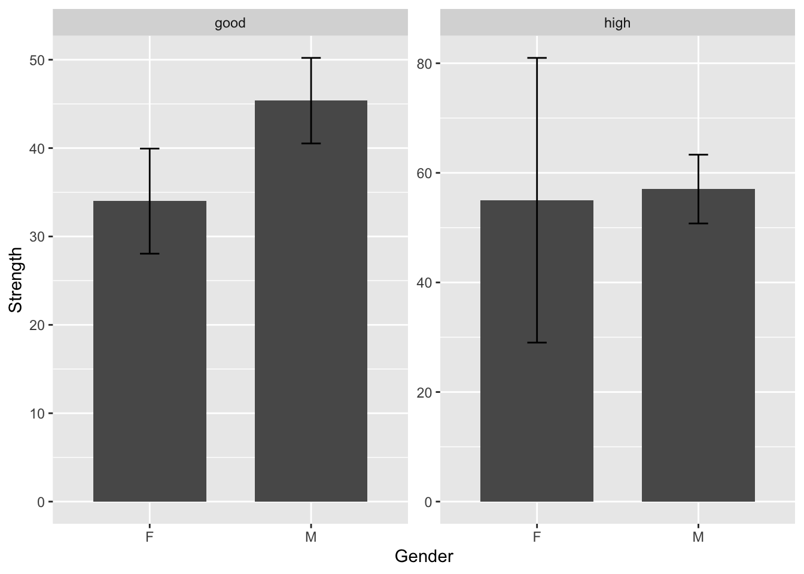
Take a quick glance at the chart. It seems like the good intelligence group has higher strength than the high intelligence group as the bar is higher.
But is that really the case?
Take a closer look at the two bar charts. The y-axis scales are different from one graph to another.
To verify, let’s calculate the average strength for both groups.
heroes2 |>
filter(Intelligence %in% c("good", "high")) |>
group_by(Intelligence, Gender) |>
summarise(mean_strength = mean(Strength))## # A tibble: 4 × 3
## # Groups: Intelligence [2]
## Intelligence Gender mean_strength
## <chr> <chr> <dbl>
## 1 good F 34
## 2 good M 45.4
## 3 high F 55
## 4 high M 57.0We can see from the results that in the good intelligence group, the average strength of both genders is actually lower than in the high intelligence group. However, without paying attention to the y-axis, we might have gotten the wrong impression that the good intelligence group had higher strength than the high intelligence group.
To fix this issue, we can manually adjust the scale using coord_cartesian(). You can choose to remove scales = "free" or leave it there. Since the code is applied in layers, if you add the manual scale after specifying scales = "free", the graph will be unaffected.
heroes2 |>
filter(Intelligence %in% c("good", "high")) |>
ggplot(aes(x = Gender, y = Strength)) +
geom_bar(stat = "summary", position = position_dodge(.8), width = .7, fill = "#BDD5EA") +
geom_errorbar(stat = "summary", position = position_dodge(0.5), width = .12) +
facet_wrap(Intelligence ~ ., scales = "free") +
coord_cartesian(ylim = c(0,100)) 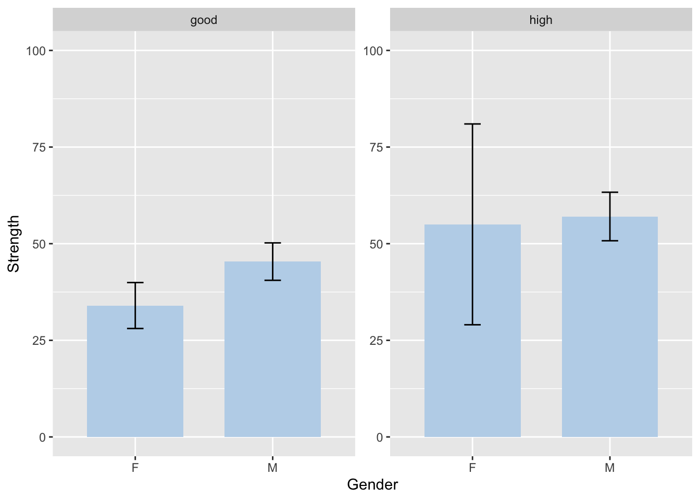
After setting the same scale for all graphs, it becomes much easier to compare them and observe relationships between variables.
You can modify the ylim() values based on your data.